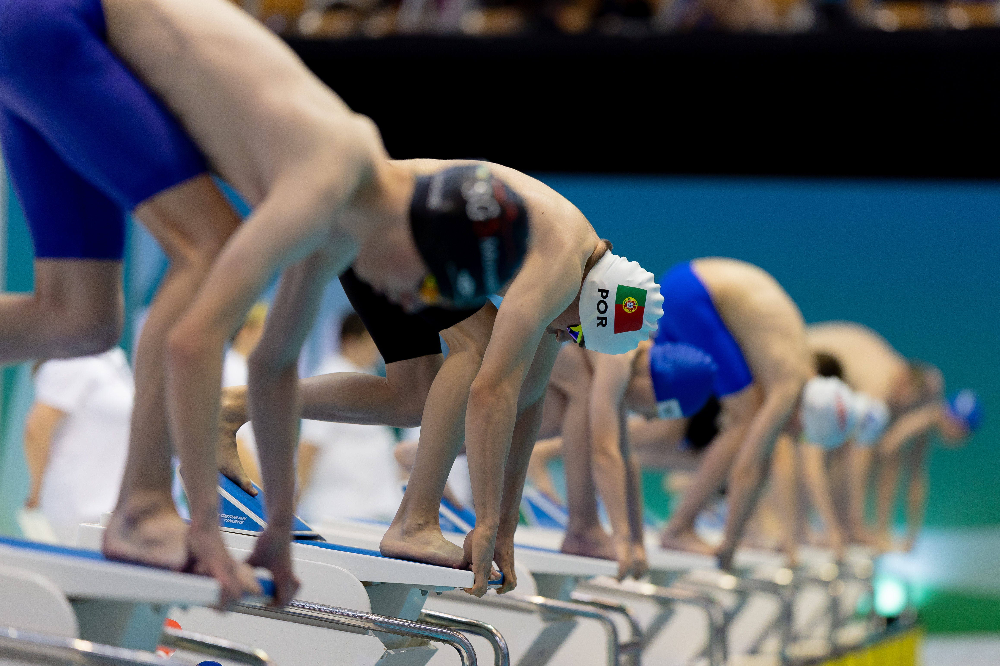
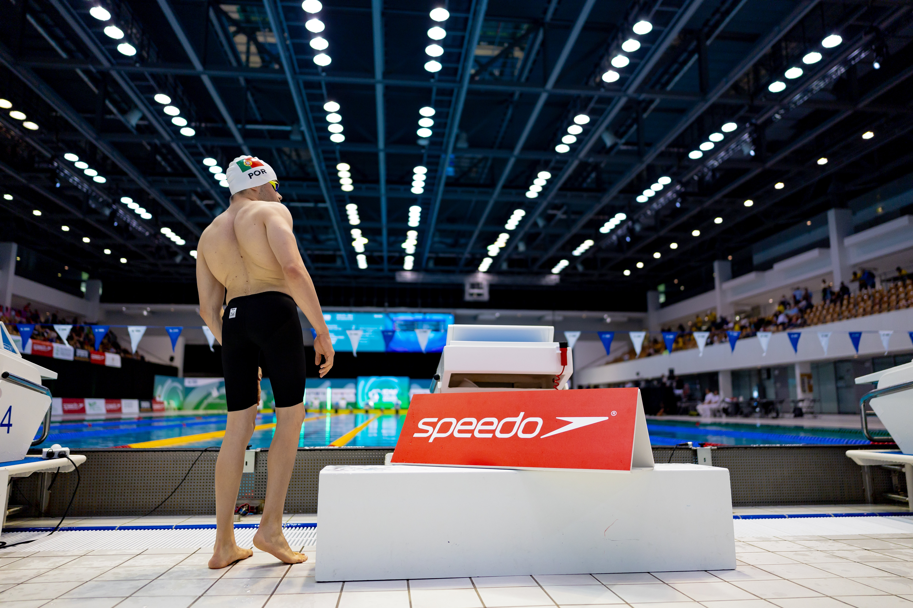
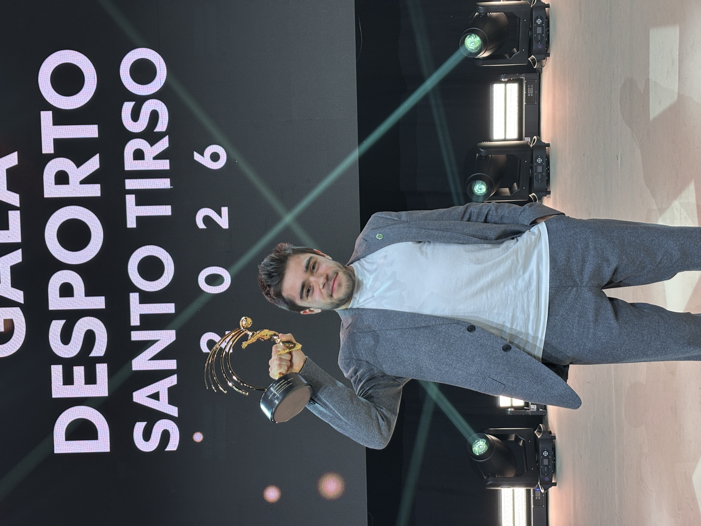
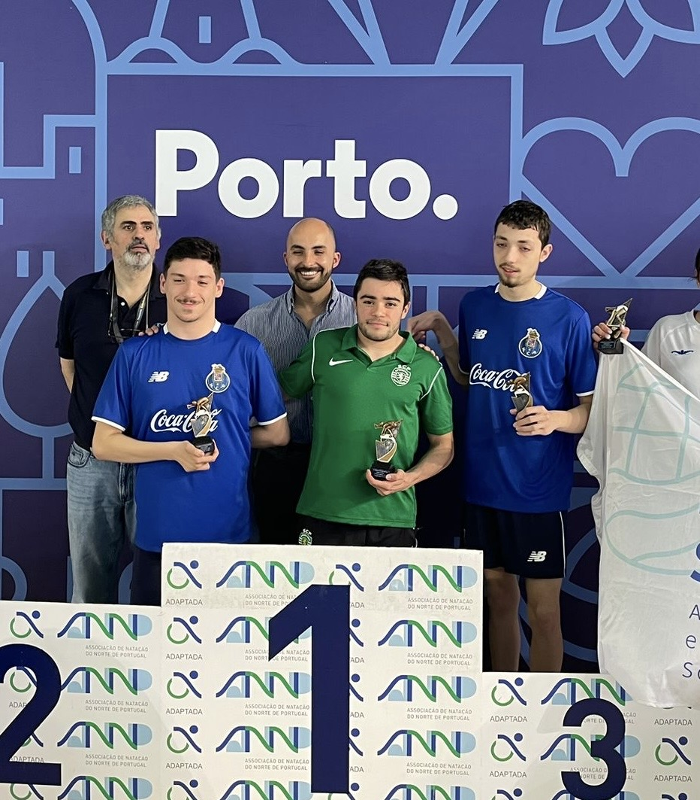
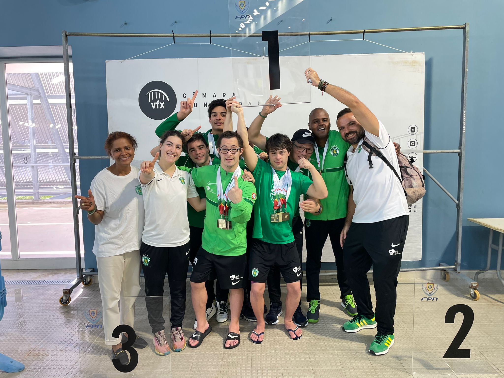
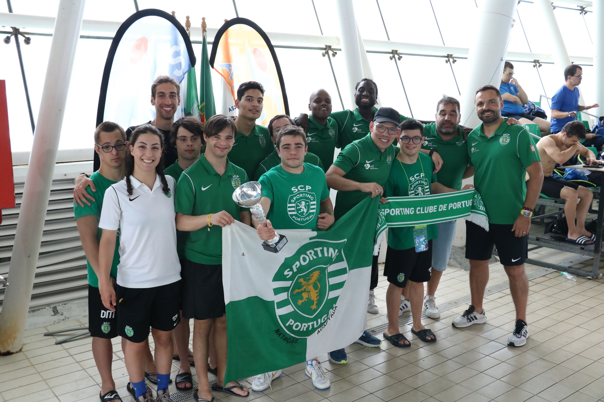
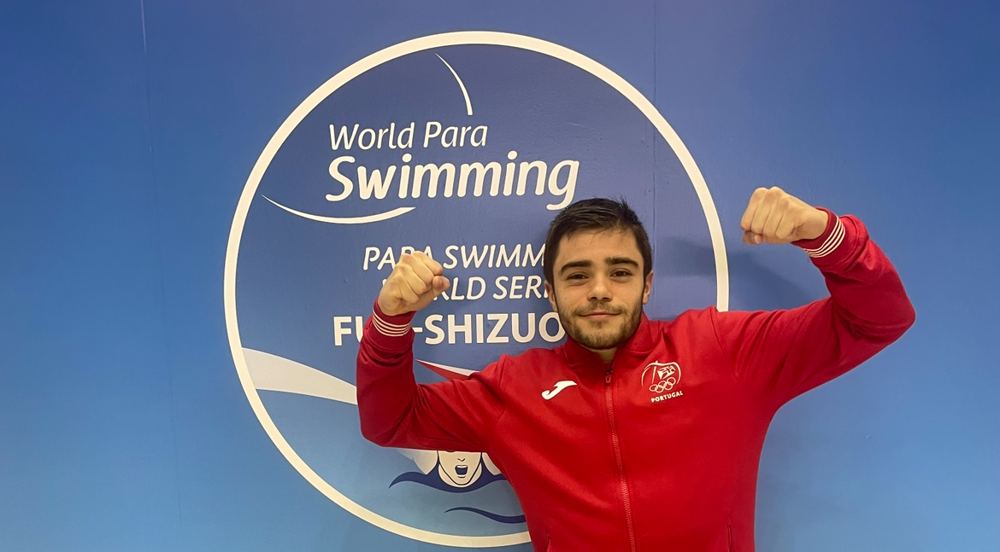
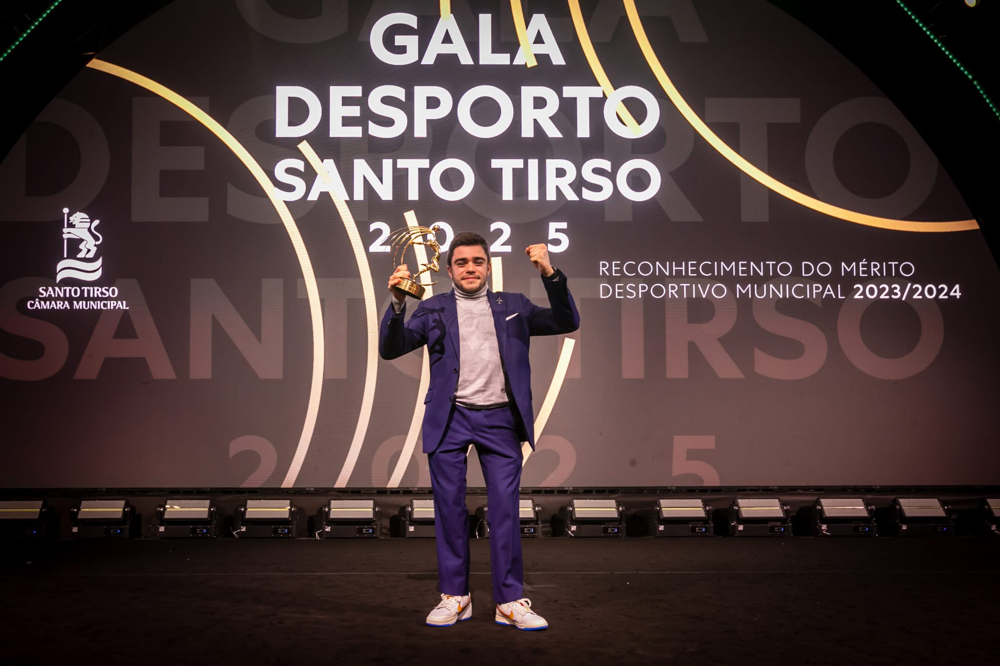

Galeria
Momentos que contam o percurso.
Competições, internacionalizações, prémios, equipa e memórias que fazem parte da minha história dentro e fora de água.
Em destaque
Alguns momentos especiais










Percurso em imagens
Momentos marcantes
Mais do que fotografias, memórias de um percurso.
Cada imagem representa trabalho, pessoas, viagens, competição, adaptação e evolução.